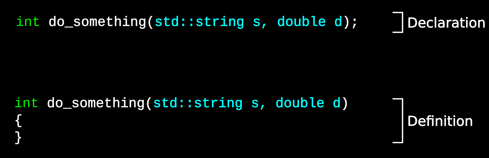

Multi-file projects#
Overview
Questions:
How can we split a large C++ project into multiple files
Objectives:
Learn how the C++ compiler preprocesses files
Learn the difference between header and source files
Learn how to include intra-project header files
What does include do?#
The #include keyword tells the compiler to simply copy and pastes the
contents of the included file into the source file. The is done before
compilation – keywords starting with # are known as preprocessor
directives and occur before actual processing/compilation of the file.
You can see the combined output after preprocessing by using the -E
argument to g++. The resulting output is usually very large due to large
amounts of standard library code. All this code, while processed, is almost
always removed at the end due to it not being used.
Forward declarations#
Up until now, we have we have placed all of our functions in a single file. In real projects, this is very rarely the case.
We now have to introduce a little more terminology around functions.
A function declaration declares the existance of a function with a particular name and signature.
A function definition contains the actual code of the function.
C++ has a rule called the one definition rule - every function can only be defined once. However, you can declare a function as many times as you like.
Note that the declaration has a semicolon at the end. This is likely something you will forget at some point (I certainly still do).
Take for example our temperature conversion function that takes a constant
reference. If we place the convert_F_to_C function below the main function,
it will not compile.
#include <iostream> // for std::cout, std::endl
int main(void)
{
double temperature = 68.1;
temperature = convert_F_to_C(temperature);
std::cout << "Temperature is " << temperature << std::endl;
return 0;
}
double convert_F_to_C(double temperature)
{
return temperature * 1.8 + 32;
}
test.cpp: In function ‘int main()’:
test.cpp:6:19: error: ‘convert_F_to_C’ was not declared in this scope
6 | temperature = convert_F_to_C(temperature);
|
(Your error message may vary depending on compiler and version).
The reason for this error is that the compiler is compiling your source file
from the top down. When compiling the main function, it runs into a call to
convert_F_to_C. In order to properly compile main, it needs to know the
signature and return type of convert_F_to_C, however it does not have that
information yet; that information is at the bottom of the file.
To fix this, we can forward declare the function above the main function.
#include <iostream> // for std::cout, std::endl
// Forward declaration of convert_F_to_C
double convert_F_to_C(double temperature);
int main(void)
{
double temperature = 68.1;
temperature = convert_F_to_C(temperature);
std::cout << "Temperature is " << temperature << std::endl;
return 0;
}
// Function definition
double convert_F_to_C(double temperature)
{
return temperature * 1.8 + 32;
}
The forward declaration tells the compiler all the info it needs to compile
main. Actually linking the function into main is the job of the linker,
called after compiling everything. At that point, the definition of
convert_F_to_C is known.
Header files#
Forward declaration in your source file is sometimes necessary to avoid circular dependencies. However, what if you have multiple source files that require a function declaration? You could manually place the declaration in each source file, however this is noisy and error-prone.
To solve this, header files are used. One purpose of header files is to declare a set of functions (and more) for source files to use. This serves a few purposes:
Prevents clutter in your source files
Small changes to function signatures only need to be made in two places (header and definition).
Exposes the minimum amount of information to users of functions (think libraries)
Good place for documentation!
Source files will the #include the header file and get the function
definitions. #include basically takes the contents of the header file and
inserts it into your source before compiling. There are compiler options
to even show you the result of this, which can be helpful for debugging
esoteric compiler errors.
Compiling vs. linking
Remember the discussion on the first day about compiling vs. linking? This is where the difference should become more clear. When compiling, you only need to have a function declaration. Then, when linking, the actual connection between the calling code and the function definition is made. That is also why there can only be one definition - if there were more, which one should the linker choose?
So lets split our project into three files - one containing main, one
containing our convert_F_to_C function, and a header file for our
convert_F_to_C functions.
Create two source files#
We will create two source files. One will contain main and the other our
convert_F_to_C function.
// main.cpp
#include <iostream> // for std::cout, std::endl
#include <vector>
// Forward declaration of convert_F_to_C
std::vector<double> convert_F_to_C(const std::vector<double> & temperatures);
int main(void)
{
std::vector<double> temperatures;
temperatures.push_back(0.0);
temperatures.push_back(-40.0);
temperatures.push_back(123.4);
std::vector<double> new_temperatures = convert_F_to_C(temperatures);
for(size_t i = 0; i < new_temperatures.size(); i++)
{
std::cout << "Temperature " << i << ": " << temperatures[i] << " C = " << new_temperatures[i] << " F" << std::endl;
}
return 0;
}
// temperature.cpp
#include <vector>
std::vector<double> convert_F_to_C(const std::vector<double> & temperatures)
{
std::vector<double> new_temperatures;
for(size_t i = 0; i < temperatures.size(); i++)
{
new_temperatures.push_back(temperatures[i]*1.8+32);
}
return new_temperatures;
}
Includes in multi-file projects
Do we need to include iostream in temperature.cpp? Why not?
Now, compile these two source files by specifying them both on the command line:
g++ main.cpp temperature.cpp -o temperature
This should compile just fine. Remember, we still have the forward declaration
of convert_F_to_C at the top of main.cpp. The second step is to move that
to a header file, temperature.hpp.
// temperature.hpp
#include <vector>
std::vector<double> convert_F_to_C(const std::vector<double> & temperatures);
And now, we can #include our new header file into main.cpp.
// main.cpp
#include <iostream> // for std::cout, std::endl
#include <vector>
#include "temperature.hpp"
int main(void)
...
Note the convention in include files: Files that are part of the current project are specified with quotation marks, and those from other libraries are specified with angled brackets. There is some effect in how compilers will find those headers, but it is also a signal to other developers reading your code there those headers files might be located.
Include guards#
The header file shown above is missing something very important. While this particular example won’t cause any problems, larger projects can have issues arise due to circular dependencies. The main problem that occurs is a header file that can get included twice from a single source file.
There are two ways to prevent this. The simplest way is to include #pragma once at the top of your header file. While not standard, it is supported
by pretty much any compiler you will use in scientific computing.
A note about file extensions#
As mentioned before, file extensions in C++ are not completely standardized. This is also true for
header files. I use the convention of .cpp for source, .hpp for C++ header. You will often find
.h for C++ header, although I typically interpret that as a C header.
Up until now, we have benn using #include <vector> and #include <iostream>. vector and iostream
are actually header files with no extension! For whatever reason, the C++ standard library chose
the convention of no extention. This is also done with some libraries, too (you may use
the Eigen matrix/vector library at some point,
which adopts this convention).
Common mistakes in multi-file projects#
I have run across several common mistakes when learning about multi-file projects. This include mistakes I made way back when first dealing with header files. So here are some rules to keep in mind:
NEVER
#includea source file (ending with.cppor.c).Source files can include header files
Header files can include header files.
You do not compile or link header files. You only compile source files (which pull header files in).
Don’t forget include guards (in header files only)
Good naming of files is important. Pick a convention (including extension) and stick with it.
As a general rule of thumb, there is one header file for each source file (except main). This is very general, though, and there are many exceptions.